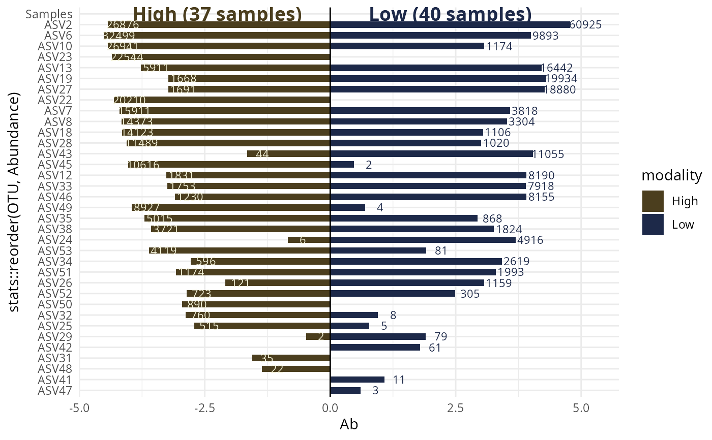
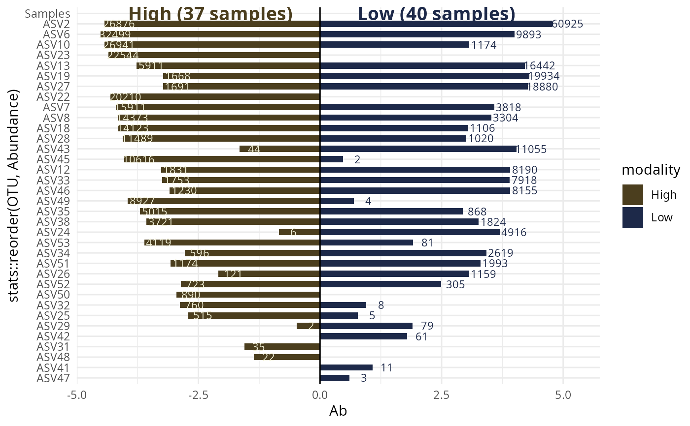

Visualization of a collection of couples of samples for comparison
Source:R/plot_functions.R
multi_biplot_pq.Rd
This allow to plot all the possible biplot_pq() combination
using one factor.
Arguments
- physeq
(required): a
phyloseq-classobject obtained using thephyloseqpackage.- split_by
(required if pairs is NULL) the name of the factor to make all combination of couples of values
- pairs
(required if pairs is NULL) the name of the factor in physeq@sam_data` slot to make plot by pairs of samples. Each level must be present only two times. Note that if you set pairs, you also must set fact arguments to pass on to
biplot_pq().- na_remove
(logical, default TRUE) if TRUE remove all the samples with NA in the
split_byvariable of thephyseq@sam_dataslot- ...
Other parameters passed on to
biplot_pq()
Examples
# \donttest{
data_fungi_abun <- subset_taxa_pq(data_fungi, taxa_sums(data_fungi) > 10000)
#> Cleaning suppress 0 taxa ( ) and 15 sample(s) ( BE9-006-B_S27_MERGED.fastq.gz / C21-NV1-M_S64_MERGED.fastq.gz / DJ2-008-B_S87_MERGED.fastq.gz / DY5-004-H_S97_MERGED.fastq.gz / DY5-004-M_S98_MERGED.fastq.gz / E9-009-B_S100_MERGED.fastq.gz / E9-009-H_S101_MERGED.fastq.gz / N22-001-B_S129_MERGED.fastq.gz / O20-X-B_S139_MERGED.fastq.gz / O21-007-M_S144_MERGED.fastq.gz / R28-008-H_S159_MERGED.fastq.gz / R28-008-M_S160_MERGED.fastq.gz / W26-001-M_S167_MERGED.fastq.gz / Y29-007-H_S182_MERGED.fastq.gz / Y29-007-M_S183_MERGED.fastq.gz ).
#> Number of non-matching ASV 0
#> Number of matching ASV 1420
#> Number of filtered-out ASV 1385
#> Number of kept ASV 35
#> Number of kept samples 170
p <- multi_biplot_pq(data_fungi_abun, "Height")
#> 54 were discarded due to NA in variables present in formula.
#> Cleaning suppress 0 taxa and 0 samples.
#> Scale for y is already present.
#> Adding another scale for y, which will replace the existing scale.
lapply(p, print)
#> Warning: Removed 1 row containing missing values or values outside the scale range
#> (`geom_rect()`).
 #> $`High - Low`
#> Warning: Removed 1 row containing missing values or values outside the scale range
#> (`geom_rect()`).

#>
# }
#> $`High - Low`
#> Warning: Removed 1 row containing missing values or values outside the scale range
#> (`geom_rect()`).

#>
# }